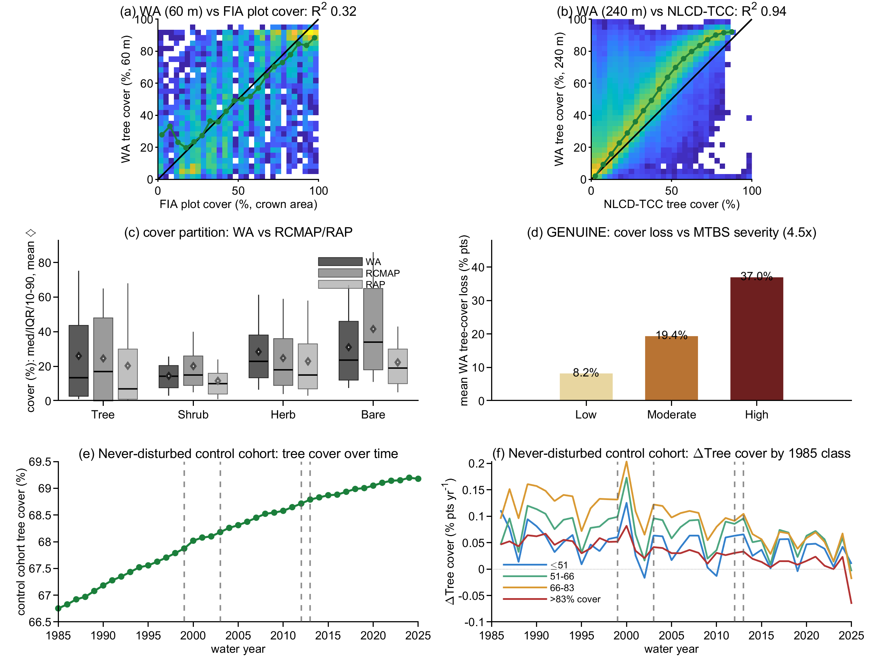

Home / Benchmarking / Cover and structure
Tree cover matches NLCD closely and tracks burn severity; independent evidence for change accuracy is the weak point.

a WA tree cover against 5,776 FIA field plots at 60 m. Modest agreement (R² 0.32); field crews measure cover differently, so this is the hardest test on the page.
b WA against the national NLCD tree-canopy product at 240 m. Close agreement (R² 0.94), though WA reads about 20% higher.
c All four cover fractions - tree, shrub, herb, bare - against RCMAP and RAP. WA divides the ground much as they do.
d Cover loss against independent MTBS fire severity. Loss rises 4.5-fold from lightly to severely burned.
e Average WA tree cover 1985-2025 for forest never disturbed. Steady, with no jumps at the Landsat changeovers.
f The same never-disturbed forest split by 1985 cover class. Classes stay separated and move sensibly.
Strengths and weaknesses on each axis, as measured. Weaknesses are stated at the same level of detail as strengths.
| Axis | Strengths | Weaknesses |
|---|---|---|
| External skill | WA tree cover matches FIA field plots (R² 0.32) [a]. Tree-cover loss scales with independent MTBS burn severity, 4.5x from low to high [d] - a non-circular cover test, though both rely on Landsat. | Independent field evidence for tree-cover change accuracy is weak (FIA remeasurement R² 0.26, mostly loss-side). We have temporal precision [e, f] but cannot prove change accuracy from field observations. Diffuse change below the noise floor is invisible. |
| Internal coherence | The never-disturbed cohort is temporally stable with steady monotonic growth and no large discontinuities at Landsat changeovers [e]. Trends roll off sensibly with increasing cover [f]. | The four cover types are forced to sum to 100%, so they are not independent of one another. |
| Cross-dataset consistency | WA tree cover matches NLCD-TCC (R² 0.94) [b], and reproduces the whole tree/shrub/herb/bare partition against RCMAP and RAP [c]. | Circular evidence: all gridded cover is Landsat-derived. USFS TCC trains WA tree; RAP trains shrub/herb/bare; only RCMAP is independent for all four. The non-tree fractions are noisier, shrub especially [c]. |
WA = Veg_TreeFrac. References: FIA field plots (FIADB California, 2024 release); NLCD tree canopy cover 2019 (v2023-5); RCMAP 2020; RAP v3 2020; MTBS thematic severity 1984-2024.